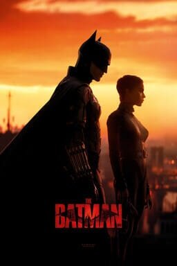
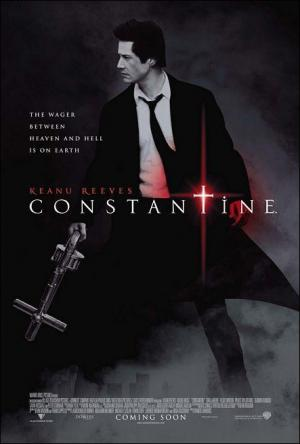

The Batman
Batman explora la corrupción existente en la ciudad de Gotham y el vínculo de esta con su propia familia. Además, entra en conflicto con un asesino en serie conocido como "el Acertijo".
Más informaciónConstantine
Un hombre que puede ver demonios ayuda a una mujer policía escéptica a investigar la misteriosa muerte de su hermana gemela.
Más informaciónSon como niños.

Un grupo de amigos y excompañeros descubren que envejecer no siempre significa madurar cuando se reúnen para honrar la memoria de su entrenador de baloncesto.
Más información